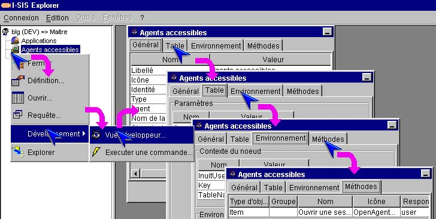
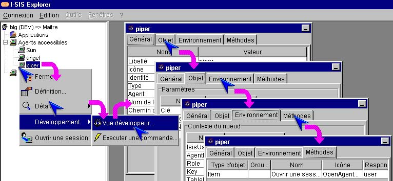

I-SIS Explorer

Guide d'utilisation
|
|
I-SIS Explorer |
|
|
Guide d'utilisation |
||
| i |
Information : Cette fonctionnalité n'est disponible que pour les utilisateur de I-SIS Explorer disposant de la responsabilité "dev". |
Cette méthode permet de visualiser les données d'un nœud, son implémentation I-SIS, et son contexte.
Affichez le menu contextuel d'un nœud table ou ligne,
Exécutez "Vue développeur..." (),
Une fenêtre affiche les paramètres du nœud sur quatre volets.
Les volets disponibles sont :
"Général", présentant des informations générales concernant le nœud,
"Table", présentant la requête définissant l'exploration de ce nœud (et par conséquent la liste des nœuds fils qui en résulteront),
"Environnement", présentant le contexte complet du nœud (environnement résultant des explorations et environnement des différentes sessions),
"Méthodes", présentant la liste des méthodes définies pour la table.

Les volets disponibles sont :
"Général", présentant des informations générales concernant le nœud,
"Objet", présentant toutes les données du nœud,
"Environnement", présentant le contexte complet du nœud (environnement résultant des explorations et environnement des différentes sessions),
"Méthodes", présentant la liste des méthodes définies pour la table.

Copyright © 2003 BV Associates. Tous droits réservés.